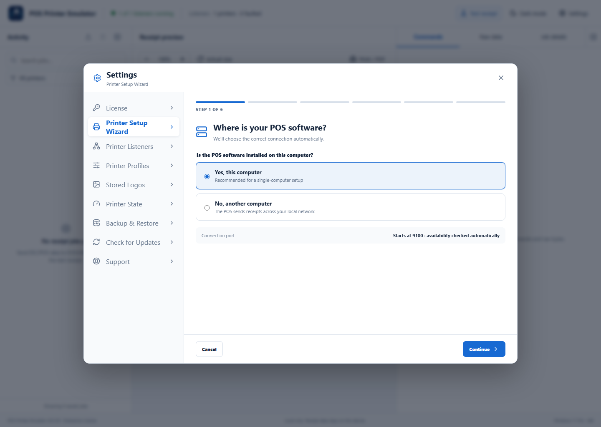
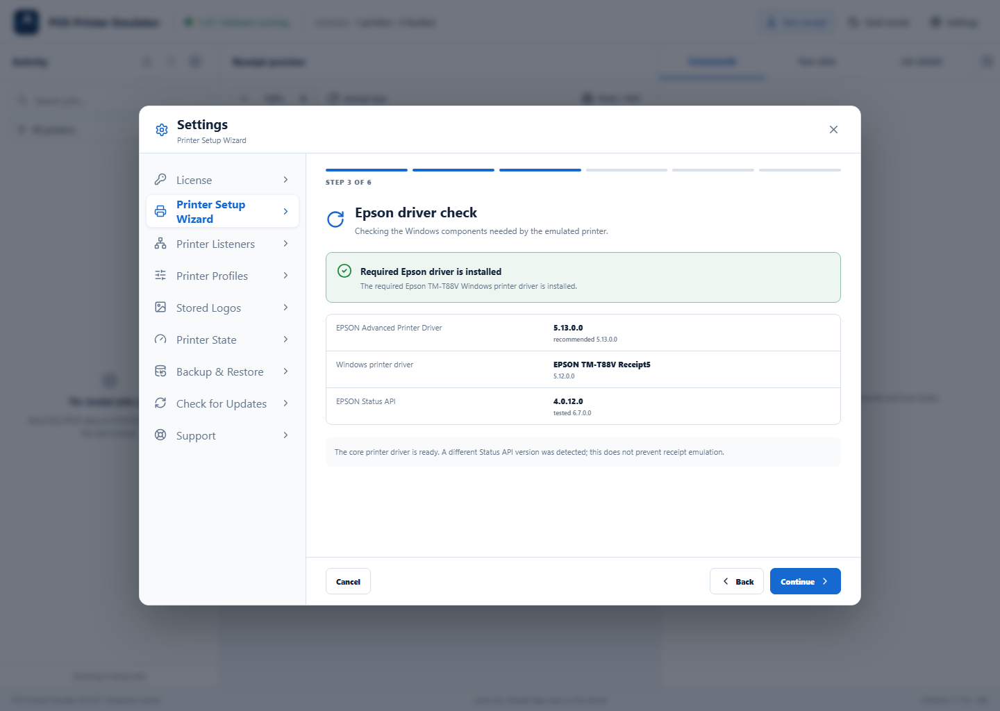
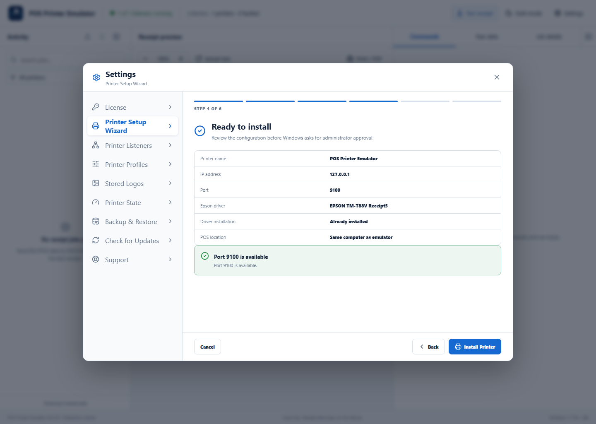

Before you start: keep POS Printer Emulator running. Windows may ask for administrator approval when the printer and driver are installed.
1Tell the wizard where the POS runs
Open Settings → Printer Setup Wizard. Choose Yes, this computer to use 127.0.0.1. Choose No, another computer to enter the emulator computer’s local network address. The wizard starts at port 9100 and automatically finds the next free port when necessary.

2Name the Windows printer
Accept POS Printer Emulator or enter a clear name that users will recognize. Continue to the Epson driver check.
3Verify the Epson driver
The wizard checks the Epson Advanced Printer Driver, EPSON TM-T88V Receipt5 driver, and Epson Status API. If the required printer driver is missing, the installation workflow prepares the required Epson components.

4Review and install
Confirm the printer name, IP address, selected free port, Epson driver, and POS location. Select Install Printer, approve the Windows prompt, and wait for the success result. Use Print Test Receipt to confirm the Windows queue works.

If installation does not finish
- Retry and approve the Windows administrator prompt.
- Close another setup window that may be changing the same printer or port.
- Open Settings → Support, run Connection Diagnostics, and save the privacy-safe package when help is needed.